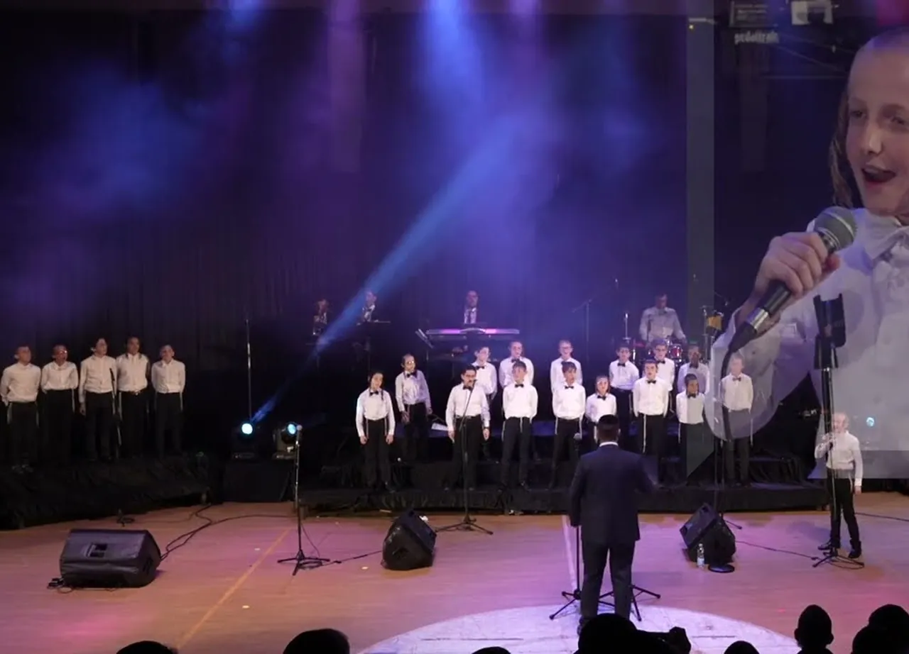
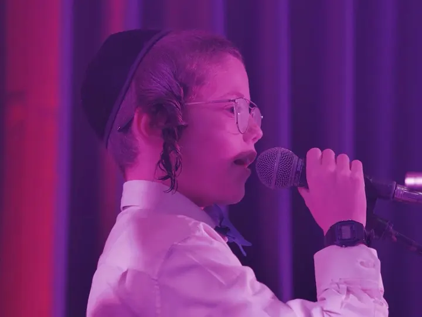
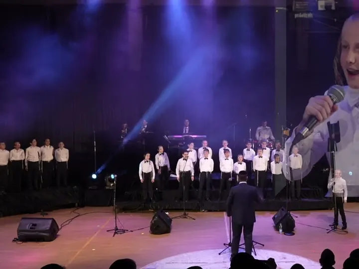

New release
Ata Bechartanu
The boys sing words from the Rosh Hashanah Musaf prayer, to a melody by Mordechai and Yisrael Meir Gordon.

Professional voice training, singing in harmony and studio recording — with personal attention for every boy, under the direction of R’ Mordechai Gordon.
Join the choir
Choose a class, leave your details in a minute, and the choir team will get back to you to arrange a short audition.
How old is your son? A quick check, no details needed
Ages 8–12 · Admission by auditionDays and times are sent to you by email
Jerusalem
Official registration: Arranged with the choir team
Jerusalem
Official registration: Neve Yaakov Community Administration
Beit Shemesh
Official registration: Gvanim Community Center
Beit Shemesh
Official registration: Dorot Community Center
Jerusalem class flyer: עברית · English
Why Pirchei Shomayim
Every boy is heard, guided and given his own place in the choir — and grows confident in his talent.
Step-by-step vocal training in the Moshe Burk method: breathing, technique and singing with confidence.
Songwriting and composing, professional studio recordings — and each year a music video or a performance, depending on the group’s program.
The choir nurtures each boy’s talent alongside his learning in cheder, and its songs are made to inspire avodas Hashem.
What the boys learn
A year in the choir is a journey, and every step builds the confidence for the next.

Correct breathing, vocal technique and caring for the voice.
Listening to each other and building one choir sound together.

Learning the basics of music and trying their own compositions.

Professional recordings of the choir’s songs, with close vocal coaching.

The year’s work comes to life in a professional music video or on stage — depending on that year’s program.
Our music
Music videos, concerts and medleys from the official channel.
New release
The boys sing words from the Rosh Hashanah Musaf prayer, to a melody by Mordechai and Yisrael Meir Gordon.
For communities, community centers & municipalities
A concert where the audience becomes part of the choir. The choir and conductor teach the audience their parts, and in the end everyone sings together. A communal, educational and musical experience — ideal for community centers and community events.
Get to know us
Pirchei Shomayim is a boys’ choir and music class active in Jerusalem and Beit Shemesh. Our goal: to encourage musical children, give them a good feeling and instill confidence in the talent Hashem has blessed them with — so that they grow stronger in their learning in cheder, not the other way around.
The choir releases songs and music videos and performs from time to time, so that everyone can enjoy them and be strengthened in avodas Hashem.
R’ Mordechai GordonConductor, composer and vocal arranger
The conductor, teachers and staff — with photos and roles.
To be completed with the choir’s materialsEducation, self-confidence and spiritual growth through music.
To be completed with the choir’s materialsConcerts, Makhalolam and community partnerships.
To be completed with the choir’s materialsParent testimonials, including video, will appear here with the families’ permission.
To be completed with the choir’s materialsQuestions parents ask
The classes are for boys aged 8–12. You can check in a second with the age check in the classes section, and the age is filled in on the form.
In Jerusalem: Ramat Eshkol and Neve Yaakov (at the Neve Yaakov Community Administration). In Beit Shemesh: Ramah A (Gvanim Community Center) and Ramah D (Dorot Community Center).
Leave your details on the site and the choir team will get back to you to arrange a short audition. After the audition you receive instructions for official registration.
The days and times of each class are sent to you by email after you leave your details.
Professional voice training, singing in harmony and studio recording — with personal attention for every boy, under the direction of R’ Mordechai Gordon.
Yes. Email us about the event and we’ll get back to you with an offer. For communities, community centers and municipalities there is also Makhalolam — a concert where the audience learns the parts and sings along with the choir.
All the songs, music videos, medleys and concerts are on the site’s songs page, and on the choir’s video channel.
Leave your details in a minute and we’ll get back to you to arrange an audition.
Find a class near youIf the player doesn’t load for you, you can open the song in a new window.